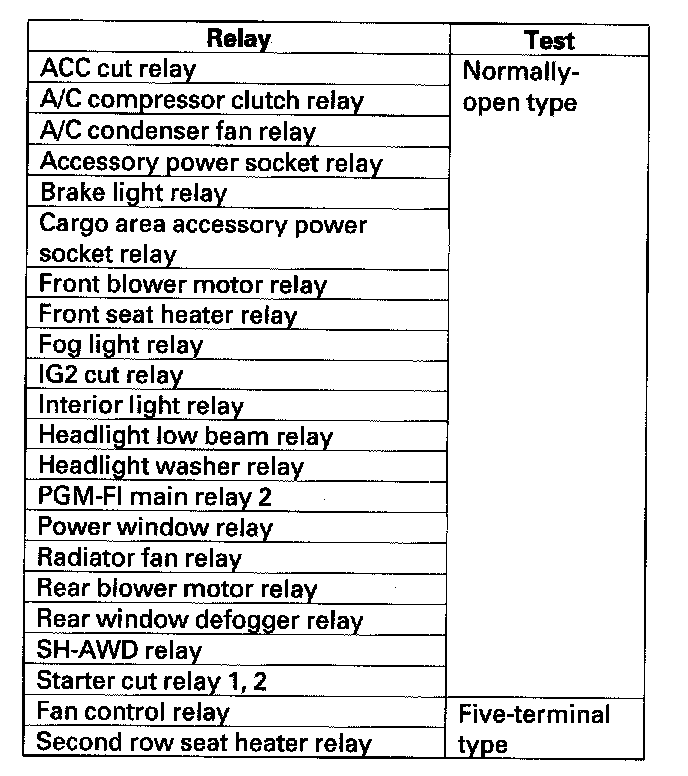

Five-Terminal Type
Power Relay Test
Use this chart to identify the type of relay, then do the test listed for it.
Five-terminal type
Check for continuity between the terminals
- There should be continuity between the No. 1 and No. 2 terminals when battery positive terminal is connected to the No. 5 terminal, and battery negative terminal is connected to the No. 3 terminal.
- There should be continuity between the No. 1 and No. 4 terminals when power is disconnected.